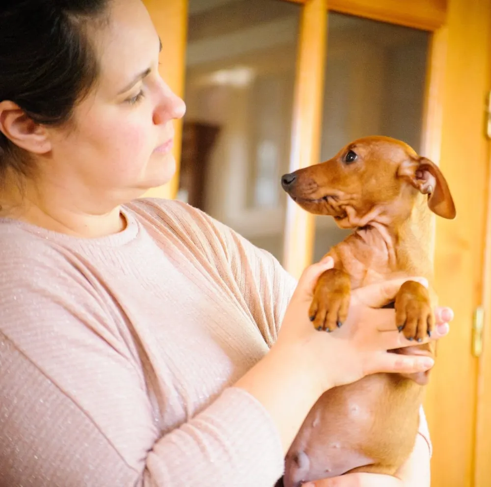
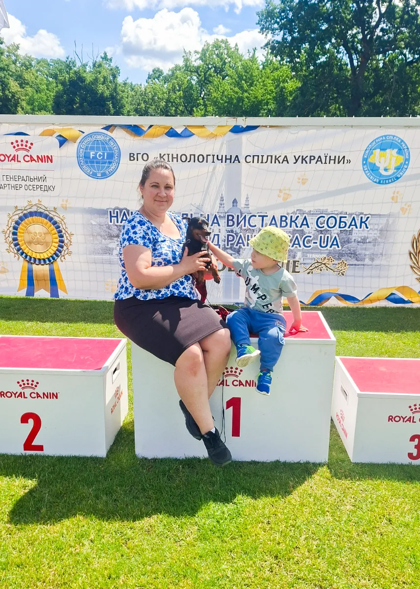

приплоди на рік
Не більше. Кожне цуценя отримує достатньо уваги, а мама — відпочинку.
А не на кількості цуценят.


Заводчик-кінолог, власниця розплідника Happy Stacyland у Чернівцях. Понад 15 років з цвергпінчерами.
уточнити: як усе почалося — перша собака, чому саме цвергпінчер, як з'явилася назва Happy Stacyland (3–5 речень)
Я не прагну виростити якомога більше цуценят. Моє завдання — виростити таких собак, яких я сама із задоволенням залишила б у своєму домі. І саме так я працюю вже понад 15 років.
Зі мною живуть 4 покоління собак мого розведення. Тому кожна пара — це рішення, з наслідками якого я житиму сама.
Не більше. Кожне цуценя отримує достатньо уваги, а мама — відпочинку.
Пари обираю так, щоб зберегти здоров'я лінії. Підтверджено офіційними сертифікатами.
Розводжу за стандартом FCI: здоров'я, характер і правильна будова.
уточнити: як ви обираєте пари; чому цуценята народжуються нечасто — своїми словами
уточнити: тиждень/вік кожного етапу і що відбувається; додамо фото з минулих приплодів
Цуценята народжуються вдома, поруч з нами.
Мама, тепло, щоденні зважування й огляди.
Звуки дому, нові поверхні, іграшки, люди, інші собаки.
Обробки і комплексні щеплення за віком.
У нову родину — по Україні і за кордон.
А я поруч: поради, підтримка, фото від випускників.
Можна приїхати до Чернівців за домовленістю, познайомитися з нашими собаками і побачити, як ростуть цуценята. Поки цуценята не вакциновані — лише подивитися, на руки не беремо.